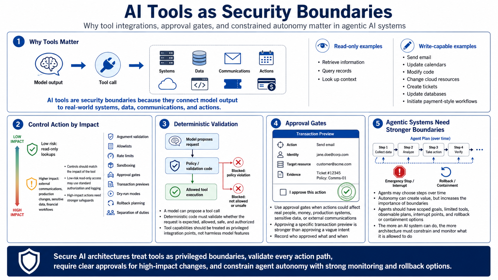

Tools, Agents, and Action Controls
Connecting to LMS... Progress: in progress

Narration
AI tools are security boundaries because they connect model output to systems, data, communications, or actions with real impact. Read-only tools may retrieve information. Write-capable tools may send email, update calendars, modify code, change cloud resources, create tickets, query or update databases, or initiate payment-style workflows at a high level. The architecture must treat those capabilities as privileged integration points, not as harmless model features.
Action controls should match the impact of the tool. Low-risk read-only lookups may require standard authorization and logging. High-impact actions need stronger controls: argument validation, allowlists, rate limits, sandboxing, approval gates, transaction previews, dry-run modes, rollback planning, and separation of duties. A model can propose a tool call, but deterministic code should validate whether the request is expected, allowed, safe, and authorized.
Approval gates are useful when an action could affect real people, money, production systems, sensitive data, or external communications. The approval should show what will happen, which identity will be used, which resource will change, and what evidence supports the action. Approving a vague intent is weaker than approving a specific transaction preview. For high-impact actions, the system should record who approved what and when.
Agentic systems need stronger controls because the model may choose steps over time. Autonomy can create value, but it also increases the importance of boundaries. Agents should have scoped goals, limited tools, observable plans, interrupt points, and clear rollback or containment options. The more an AI system can do, the more architecture must constrain and monitor what it is allowed to do.